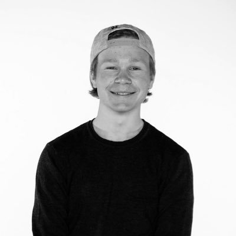

<section role="main">
  <div class="small-12 columns">
    <!--<h1 class="mvl">{{ page.title }}</h1>-->

    <div class="row">
      <div class="medium-9 large-7 small-centered column">
        
        <!-- Bilde her -->
        <!-- <div class="row" data-equalizer data-equalize-on="medium" id="test-eq"> -->
  <div class="medium-4 columns">
    <div class="callout" data-equalizer-watch>
      
    </div>
  </div>
        <!-- Bilde slutt -->

<head>
<style>
  h1 {
      text-align: center;
  }

  h2 {
      text-align: center;
  }

  h3 {
      text-align: center;
  }
</style>
</head>
<body>


        <p class="mbm">Mitt navn er Daniel Kirkeng, jeg er 17 år. ...</a>.</p>
        
        <p class="mbl">Mer tekst her?</p>

      </div>
    </div>

    <div class="row"> 

      <div class="large-4 columns">
        <p>Prosjekt 1.</p>

      </div>

      <div class="large-4 columns">
        <p>Prosjekt 2.</p>
      </div>

      <div class="large-4 columns">
        <p>Prosjekt 3.</p>
      </div>

    </div>

    <div class="row">
      <div class="medium-9 large-7 small-centered column">
      
        <p class="mvl">Og mer blir det!</p> 

      </div>
    </div>

  </div>
</section>